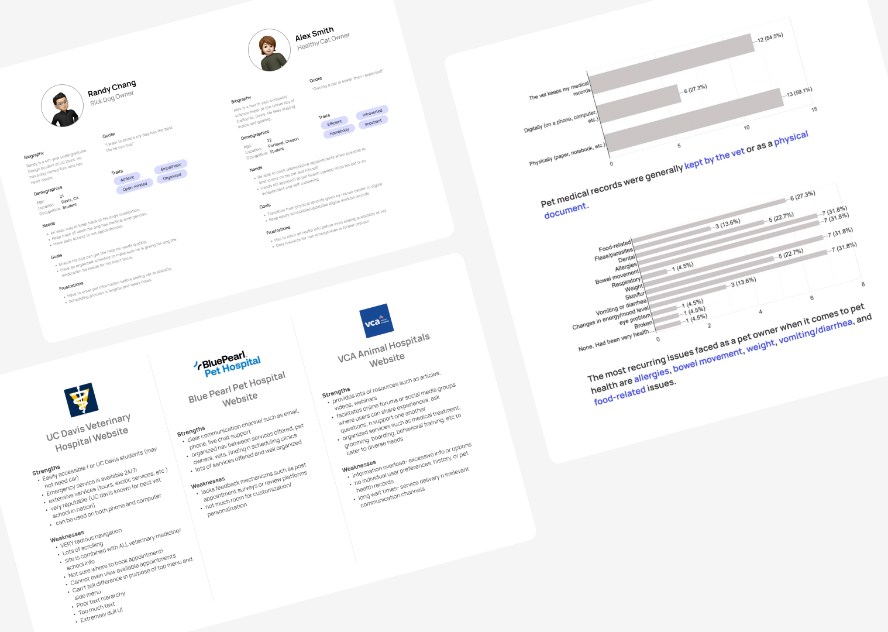
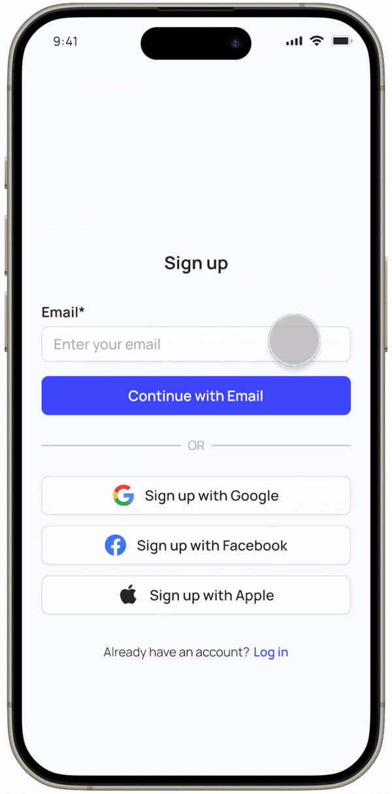

Project Overview.
All paper records, scattered digital files, and pet health information can be consolidated into a single app with Pet Pulse. Through rigorous research and analysis, our team designed an interactive prototype facilitating seamless management of pet healthcare records and appointments. Our solution meets the diverse needs of pet owners while increasing access to vital veterinary services.
Through six weeks, my team and I had weekly sprints with Project Manager Karen Dang providing feedback and critiques, ending with a presentation to a panel of industry professionals and over 50 students.
Focusing on the solution.
What features are needed to create a centralized platform for pet owners to manage veterinarian documents and stay well informed about their pets' health?
Sprinting through the design process.
User Research
My first approach was discovering the issues pet owners face with the healthcare platforms. My team and I conducted comparative analysis to note the strengths, weaknesses, and opportunities about the experiences and interfaces for the UC Davis Veterinary Hospital, Blue Pearl Pet Hospital, VCA Animal Hospital.
To learn more about the needs, wants, and struggles of pet owners, I distributed a survey to 50 pet owners and conducted 8 user interviews. Users noted they struggled with medical record keeping, navigating current veterinary service interfaces.
"I'm usually too stressed about how [my dog] is doing to keep track of a stack of papers when she's sick."
— Participant A
"Setting up an appointment is annoying. I either have to call and hope they pick up, or go through a too-many-step process online."
— Participant B

Comparative analysis, user personas, interviews, and survey data
What I learned.
User Pain Points
There were financial, transporation, and accessibility barriers, overload in existing platforms, communication challenges, as well as a demand for remote healthcare tools.
Design Priorities
Emphasized the importance of creating a streamlined interface that minimizes sensory overload and enhances usability for users of varying ages and technical proficiencies.
To the drawing board.
Sketches
With ideas surrounding decreasing stress and increasing efficiency in pet healthcare, I created sketches of potential screens for record keeping, clinic finding, appointment scheduling, pet profile editing, and vet messaging.

✋ Pause!
Pet health is a broad topic, and there was difficulty narrowing down the direction my team and I wanted the app to go in. Record keeping, appointment scheduling, and vet messaging made it to later iterations. However, we decided to reduce our focus on the clinic finding aspect, as we felt that kind of research was not central to our app's purpose.
The features.
Onboarding
Input pet information to streamline future appointment scheduling
Home
Hub for reminders, messages, access pet profiles
Appointments
Schedule, reschedule, and cancel veterinarian visits
Medical Records
Filter, organize, upload, and receive medical records
Does it work?
Searching for pain points, I conducted observed participants navigating the design, which revealed: it does (with some adjustments needed).
More refinement.
My team and I analyzed user preferences in participants through A/B testing for the following features:
- Viewing a particular medical record
- Rescheduling/canceling an appointment
- Placement pop-up for additional vaccine information

The design.
Register
Sign up, filled in your pet's information, and link to a vet clinic for easy appointment scheduling later.

Home
Access your pet's medical history, manage veterinarian appointments, and learn about medical terms related to your pet.

Messaging
Get in touch with your veterinarian for questions, updates, and concerns.

Medical records
View and sort through documents upload by the veterinarian or yourself.

Appointment Managing
Scheduling
Book an appointment, with pet and personal details auto-filled out, for a stress-free experience.
Rescheduling
Have a schedule conflict? Reschedule your vet appointment at and to your convenience.

Presenting to the panel.
My team and I were judged by Neha Deshmukh, a UX Designer at Amazon. Her feedback was incredibly valuable, emphasizing our research strengths and guiding us to refine problem definition when implementing educational aspects of the app. After presenting to a panel of 4 other judges, my team and I won the Best Overall Design Award out of our cohort.

Takeaways.
Narrowing the scope
In the ideation phase of this project, I had difficulties identifying the design's purpose. Healthcare is a broad category, and our team could tackle different aspects of the topic. By continuously revisiting and focusing on the results from the surveys and interviews, I established a clearer direction for the app.
Team communication
With a broad topic and 6-week deadline, communication between team members was important throughout the design process. My team and I made sure to discuss our action items and progress during meetings to ensure everyone was aligned with the project's direction and goals.